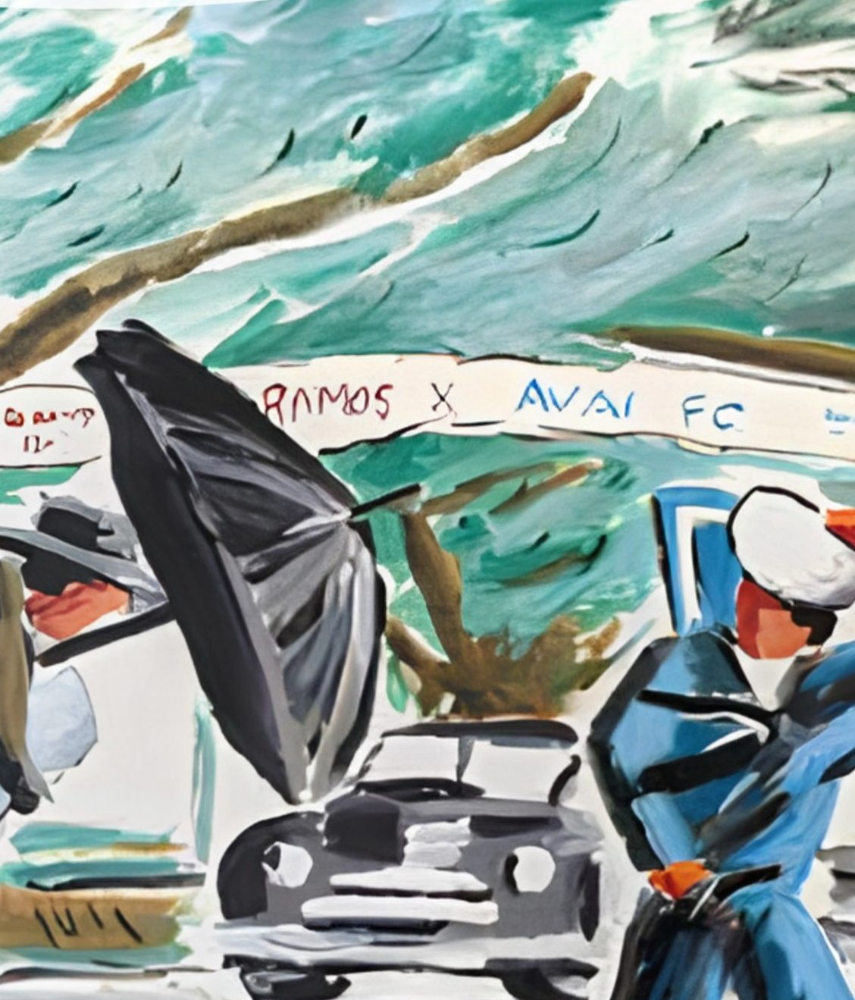

Térreo · Sala 2
Sob o olhar de Edla
Da antiga Praia de Fora aos futuros imaginados para a casa, a mostra percorre as famílias que a habitaram, a tradição consular e a trajetória de Edla, fotógrafa e primeira cineasta catarinense.
Exposições inaugurais · A partir de 14 de dezembro de 2026
As exposições inaugurais ocupam a Casa Bocaiuva, com Hassis: um olhar em movimento, e a Casa do Barão, com a trajetória da casa, da paisagem do século XIX à obra concluída em 2026.
A partir delas, o Centro Cultural receberá exposições selecionadas por edital, atividades educativas e ações de pesquisa sobre a memória de Santa Catarina.

Exposição inaugural · Casa Bocaiuva
14 de dezembro de 2026 a 31 de março de 2027
Celebrar os 100 anos de Hassis é reconhecer a dimensão de uma produção que atravessou mais de cinco décadas e se tornou parte da história da arte em Santa Catarina.
A exposição reúne obras das séries Hassis Florianópolis, Hassis Moderno e Hassis Mar.
Exposições inaugurais
14 de dezembro de 2026 a 3 de junho de 2027
Térreo · Sala 2
Da antiga Praia de Fora aos futuros imaginados para a casa, a mostra percorre as famílias que a habitaram, a tradição consular e a trajetória de Edla, fotógrafa e primeira cineasta catarinense.
Pavimento superior · Sala 3
Do tombamento ao Centro Cultural do Ministério Público de Santa Catarina: a preservação da Casa do Barão e da Casa Bocaiuva e sua conversão em espaço público de cultura, com uma releitura do gradil a partir do símbolo Sankofa.
Anexo da Casa do Barão
Antiga sede consular, receberá futuramente um café.
Para baixar
Versões digitais dos folders distribuídos no Centro Cultural.